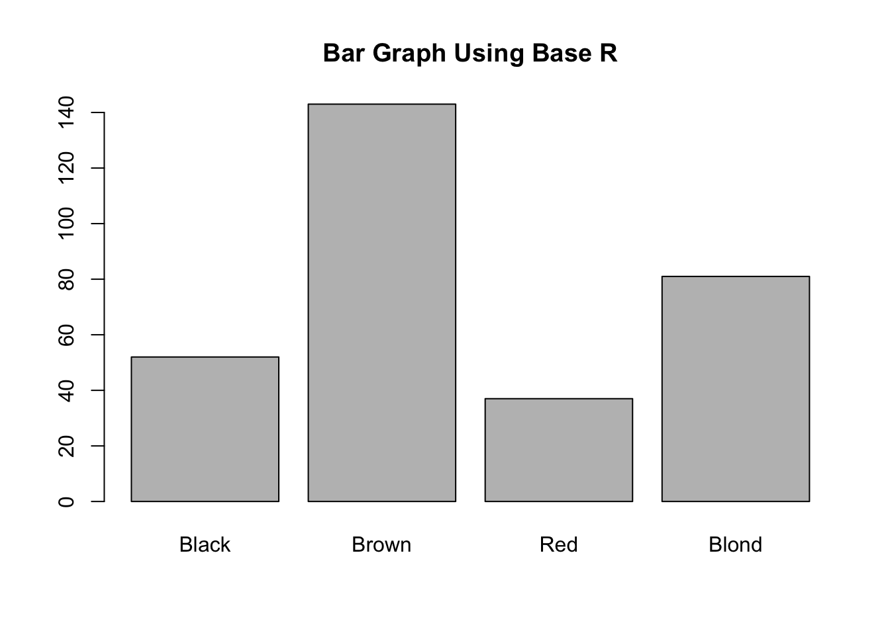
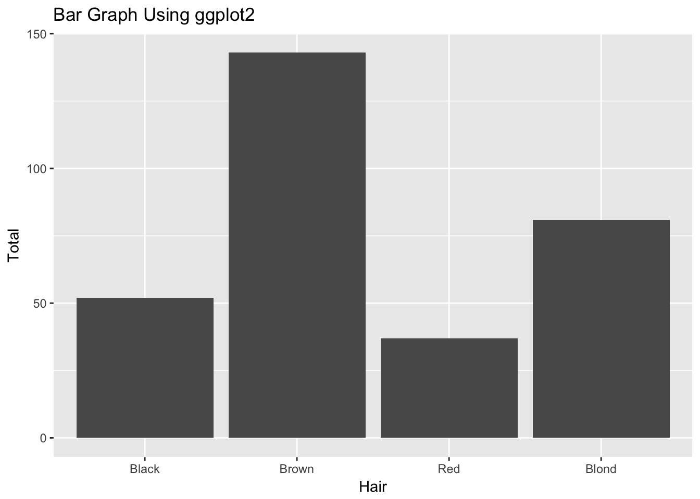

5 Chart: Bar Graph

5.1 Overview
This section covers how to make bar graphs
5.2 tl;dr
I want a nice example. Not tomorrow, not after breakfast. NOW!
Here’s a bar chart showing the survival rates of passengers aboard the RMS Titanic:

And here’s the code:
library(datasets) # data
library(ggplot2) # plotting
library(dplyr) # manipulation
# Combine Children and Adult stats together
ship_grouped <- as.data.frame(Titanic) %>%
group_by(Class, Sex, Survived) %>%
summarise(Total = sum(Freq))
ggplot(ship_grouped, aes(x = Survived, y = Total, fill = Sex)) +
geom_bar(position = "dodge", stat = "identity") +
geom_text(aes(label = Total), position = position_dodge(width = 0.9),
vjust = -0.4, color = "grey68") +
facet_wrap(~Class) +
# formatting
ylim(0, 750) +
ggtitle("Don't Be A Crew Member On The Titanic",
subtitle = "Survival Rates of Titanic Passengers by Class and Gender") +
scale_fill_manual(values = c("#b2df8a", "#a6cee3")) +
labs(y = "Passenger Count", caption = "Source: titanic::titanic_train") +
theme(plot.title = element_text(face = "bold")) +
theme(plot.subtitle = element_text(face = "bold", color = "grey35")) +
theme(plot.caption = element_text(color = "grey68"))For more info on this dataset, type ?datasets::Titanic into the console.
5.3 Simple examples
My eyes were bigger than my stomach. Much simpler please!
Let’s use the HairEyeColor dataset. To start, we will just look at the different categories of hair color among females:
colors <- as.data.frame(HairEyeColor)
# just female hair color, using dplyr
colors_female_hair <- colors %>%
filter(Sex == "Female") %>%
group_by(Hair) %>%
summarise(Total = sum(Freq))
# take a look at data
head(colors_female_hair)## # A tibble: 4 x 2
## Hair Total
## <fct> <dbl>
## 1 Black 52
## 2 Brown 143
## 3 Red 37
## 4 Blond 81Now let’s make some graphs with this data.
5.3.1 Bar graph using base R
barplot(colors_female_hair[["Total"]],
names.arg = colors_female_hair[["Hair"]],
main = "Bar Graph Using Base R")
We recommend using Base R only for simple bar graphs for yourself. Like all of Base R, it is simple to setup. Note: Base R expects a vector or matrix, hence the double brackets in the barplot call (gets columns as lists).
5.3.2 Bar graph using ggplot2
library(ggplot2) # plotting
ggplot(colors_female_hair, aes(x = Hair, y = Total)) +
geom_bar(stat = "identity") +
ggtitle("Bar Graph Using ggplot2")
Bar plots are very easy in ggplot2. You pass in a dataframe and let it know which parts you want to map to different aesthetics. Note: In this case, we have a table of values and want to plot them as explicit bar heights. Because of this, we specify the y aesthetic as the Total column, but we also have to specify stat = "identity" in geom_bar() so it knows to plot them correctly. Often you will have datasets where each row is one observation and you want to group them into bars. In that case, the y aesthetic and stat = "identity" do not have to be specified.
5.4 When to use
Bar Charts are best for categorical data. Often you will have a collection of factors that you want to split into different groups.
5.5 Considerations
5.5.1 Not for continuous data
If you are finding that your bar graphs aren’t looking right, make sure your data is categorical and not continuous. If you want to plot continuous data using bars, that is what histograms are for!
5.6 Modifications
These modifications assume you are using ggplot2.
5.6.1 Flip Bars
To flip the orientation, just tack on coord_flip():
ggplot(colors_female_hair, aes(x = Hair, y = Total)) +
geom_bar(stat = "identity") +
ggtitle("Bar Graph Using ggplot2") +
coord_flip()
5.6.2 Reorder Factor
One way to reorder bar graphs is to reorder the factor:
reordered <- colors_female_hair
reordered$Hair <- ordered(reordered$Hair, levels = c("Black", "Blond", "Brown", "Red"))
ggplot(reordered, aes(x = Hair, y = Total)) +
geom_bar(stat = "identity") +
ggtitle("Bar Graph Using ggplot2")
5.6.3 Facet Wrap
You can split the graph into small multiples using facet_wrap() (don’t forget the tilde, ~):
ggplot(colors, aes(x = Sex, y = Freq)) +
geom_bar(stat = "identity") +
facet_wrap(~Hair)
5.7 Theory
- For more info about plotting categorical data, check out Chapter 4 of the textbook.
5.8 External resources
- Cookbook for R: Discussion on reordering the levels of a factor.
- DataCamp Exercise: Simple exercise on making bar graphs with
ggplot2. - ggplot2 cheatsheet: Always good to have close by.
with